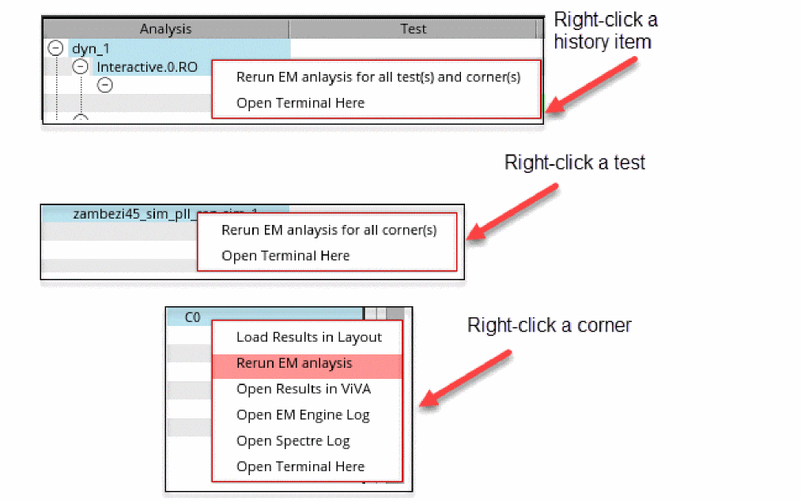

Rerunning EM Analysis with Different EM Settings
To rerun the EM analysis with modified EM settings, do the following:
- On the Voltus-XFi window, choose Results from the task pane.
- Right-click a history item, test, or corner for which you want to rerun EM analysis.
-
Select the Rerun EM analysis option.
Depending on your selection, the shortcut option allows you to run EM analysis for all tests and corners of an analysis, all corners of a test, or a specific corner.An EMIR results database file (.wdb) is generated with the new EM settings that can be loaded in the Voltus-XFi Result Browser. The.wdbfile is saved in the rerun (for example,00_rereun_em,01_rereun_em, and so on) folder in the psf directory.
Related Topics
Return to top